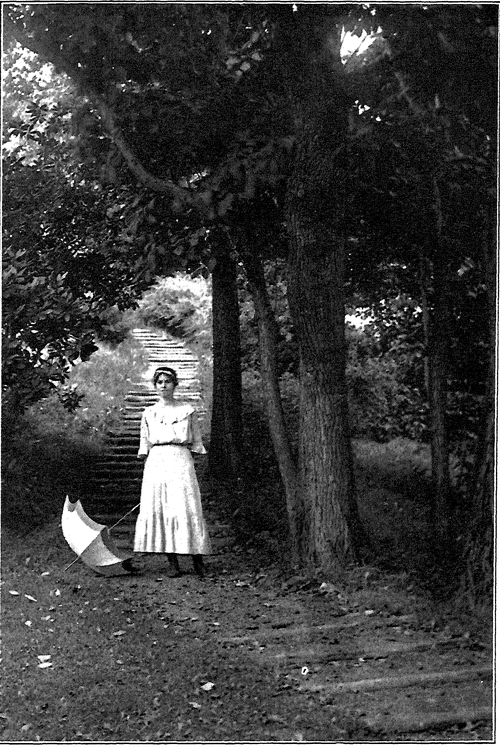

The Art Of Grouping. Part 5
Description
This section is from the book "The Natural Style In Landscape Gardening", by Frank A. Waugh. Also available from Amazon: The Natural Style in Landscape Gardening.
The Art Of Grouping. Part 5
The fact is, of course, that these miscellaneous colors are actually harmonized by Nature, and by such heroic means as the artists never could command. She uses first that never-failing background of cool green which absorbs so much of the conflicting colors that there is little left to offend the eye. And then over all there pours the bright sunshine from heaven out of that warm and infinite sky; and that brilliant sunshine, while it makes the individual colors more vivid, catches them up in such a quantity of white light that they are all brought into solution, as it were, and are effectively blended in spite of all their antagonisms. So it happens that color combinations which would seem wild and savage in the subdued light of Millicent's boudoir pass gloriously unchallenged out in the white sunlight under the open sky and against that quiet background of green.
Even at that, I am often tempted to feel that our super-civilization has made us too finicky about colors. A whole lot of the rules and regulations which are supposed to govern colors seem very arbitrary, and are the invention of man rather than a wise interpretation of nature. After some years of impeccable existence amongst the most delicate and refined color modulations we suddenly find an Indian blanket brilliant with the loudest yellows, reds, and blues, but beautiful beyond all gainsayr ing. Or we get a shelfful of old Bavarian peasant pottery, or we see the Swede girls in their native costumes, and we are lost in wonder that anything so absolutely opposed to our teaching can be so thoroughly good. For a moment we may have a suspicion that nature knows her own game as well as we do, and is quite as willing to have the world beautiful in her own way as after any manner which we can teach her.
Even the artists themselves sometimes attempt the use of raw colors. One has only to visit the modern art shows to see that some of the most thoughtful workers have decided that white light and the human eye can be depended on to resolve the primary colors into harmonious effects even where a scientific analysis might demonstrate their utter incompatibility.
All of which is respectfully submitted to show why, whenever I hear of some precious lady who is going to make a pink garden or a purple garden, I look the other way and smile. It would be too much to say that questions of color can be wholly ignored in gardening. The truth is simply that they have to be treated quite differently from the way they are managed in millinery. Thus, as I reason out the situation, I would decide that, while color patterns may possibly be worked out to a qualified success in the formal garden, there is small opportunity for anything of this sort in the naturalistic informal garden.
HILLSIDE GARDEN". GROUNDS OF THE MASSACHUSETTS AGRICULTURAL COLLEGE.
Designed, executed and photo graphed by the Author.
Shrubs and trees show differences in color, to be sure; and in the art of grouping one must see that inharmonious colors are not placed side by side, either in the same or in adjoining groups. There are wide ranges of value in greens—a whole gamut between the light gray greens and the dark blue greens;—and very rich, though delicate, modulations are possible within these limits. Here is where the landscape gardener can be as subtle as he pleases.
For the most important consideration we may adopt a negative rule, viz., avoid all unusual and unnatural colors. In naturalistic gardening such plants as Pissard's plum, Schwerdler's maple and the variegated weigelia should be used most rarely or never at all.
To this may be added one simple rule, as follows: Use the brightest colors, when they are used at all, in the distance, medium colors in middle ground, and the softest colors in the foreground.
This method, it should be clearly understood, is applicable only in purely naturalistic gardening on lands of considerable extent. In small gardens and in the areas about dwellings, club houses, etc., colors may be handled quite differently. The scheme of color planting recently presented by Professor R. R. Root, which seems on its face to contradict the principle here laid down, is in reality effective and appropriate in these smaller, more refined, more humanized (and nearly always more formalized) places.
Textures in naturalistic planting are usually more important than colors. By texture in this connection we signify the size and character of foliage plus the habit of twig growth plus pretty much the whole habit of the plant. Plants of different habit of growth should rarely be combined in the same group unless a definite contrast is desired and achieved. Textures of twig and foliage should be quite as carefully harmonized as colors.
In general, too, we may safely follow the rule of placing the coarsest textures in the background and the most delicate textures in the foreground.
In special cases very coarse^nd very fine textures may be brought together for purposes of contrast, remembering always that in art harmony should prevail and contrast should be the exception. Frequent contrasts in any work of art soon lose their force and become tedious or even obnoxious.
Continue to: